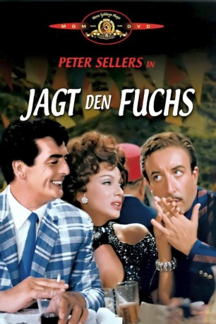

#12212 Jagt den Fuchs
Alternativ: After the Fox (Englischer Titel)
 
 IMDB-Wertung: 6.5 / 10
IMDB-Wertung: 6.5 / 10  Tomatometer: 75
Tomatometer: 75  Metascore: 0
Metascore: 0 
In Kairo werden Goldbarren im Wert von 3 Millionen US-Dollar gestohlen. Die Diebe versuchen die Barren, die knapp zwei Tonnen wiegen, nach Europa zu schmuggeln. Es gibt nur vier Gauner, die das schaffen können. Der Franzose ist auf einen Rollstuhl angewiesen; der Ire ist so kurzsichtig, dass er die Bank, die er ausrauben will, mit einer Polizeistation verwechselt; der Deutsche ist so fett, dass er durch kaum eine Tür passt. Nur der Italiener Aldo Vanucci, der den Spitznamen „Fuchs“ trägt und ein Verkleidungskünstler ist, scheint dafür gerissen genug zu sein.
Jahr: 1966
Dauer: 103 Minuten
FSK: 6
Land: Italien Studio: United ArtistsTonspuren:
Untertitel:
Auflösung: 1080p (1920x800) Größe: 7833 MB
Genre: Komödie, Krimi
Regisseur: Vittorio De Sica
Drehbuch: Neil Simon, Cesare Zavattini
Soundtrack: Burt Bacharach, Piero Piccioni
Darsteller:
 Peter Sellers als Aldo Vanucci
Peter Sellers als Aldo Vanucci Victor Mature als Tony Powell
Victor Mature als Tony Powell Britt Ekland als Gina Romantica
Britt Ekland als Gina Romantica Martin Balsam als Harry Granoff
Martin Balsam als Harry Granoff Akim Tamiroff als Okra
Akim Tamiroff als Okra- Lando Buzzanca als Police Chief
- Maria Grazia Buccella als Bikini Girl
 Maurice Denham als Chief of Interpol
Maurice Denham als Chief of Interpol- Carlo Croccolo als Café Owner
- Daniele Vargas als Prosecuting Counsel
 Enzo Fiermonte als Raymond
Enzo Fiermonte als Raymond Timothy Bateson als Michael O'Reilly (uncredited)
Timothy Bateson als Michael O'Reilly (uncredited)- Vittorio De Sica als Himself (uncredited)
- Carlo Delle Piane als (uncredited)
 David Lodge als Police Officer (uncredited)
David Lodge als Police Officer (uncredited)- Carlo Pisacane als 2nd Judge (uncredited)
- Lizabeth Scott als Actress in Tony Powell Movie (archive footage) (uncredited)
 Nino Vingelli als 3rd Judge (uncredited)
Nino Vingelli als 3rd Judge (uncredited)- Paolo Stoppa als Polio
- Tino Buazzelli als Siepi
- Mac Ronay als Carlo
- Lydia Brazzi als Mamma Vanucci
- Tiberio Murgia als 1st Detective
- Francesco De Leone als 2nd Detective
- Nino Musco als Mayor
- Pier Luigi Pizzi als Doctor
- Lino Mattera als Singer
- Piero Gerlini als 1st Jailer
- Franco Sportelli als Judge
- Giustino Durano als Critic
- Mimmo Poli als Fat Actor
- Roberto De Simone als Marcel Vignon
- Angelo Spaggiari als Felix Kessler
- Mario Del Vago als Manuel Ortega
- Ugo Carboni als Pharmacist in Sevalio (uncredited)
- Angelo Casadei als Cameraman (uncredited)
- Bruna Cealti als Laundress (uncredited)
- Daniela Igliozzi als (uncredited)
- Enrico Luzi als Movie Director on Via Veneto (uncredited)
- Maria Grazia Marescalchi als Woman in Sevalio (uncredited)
- Valeria Montesi als Pharmacist's wife (uncredited)
- Marcella Rovena als Salvatore's Wife (uncredited)
- Alessandro Tedeschi als Restaurant customer (uncredited)
- Francesco Telli als Child in Sevalio (uncredited)
Datei: X:\1966\Jagt den Fuchs (1966, FSK6, 1920x800).mkv seit 30.12.2019
Festplatte: Gemischt-01+Anime
 Es gibt insgesamt 27 Filme in der Gruppe '1966'
Es gibt insgesamt 27 Filme in der Gruppe '1966'